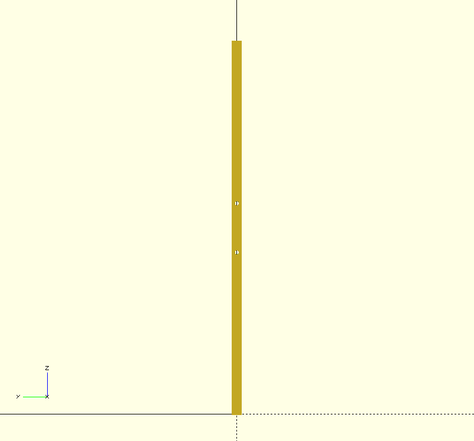

Last update on 19 April 2017.
Parts needed
| Name | Quantity | Where to use |
|---|---|---|
| L profile 40x20 | 2 | Diafragma and clavicule |
| Sigma profile 30x30 | 1 | Vertebral column |
| Rectangular pipe 380x10x10, wall 2mm | 2 | Arm support |
| Radial bearing 608rs | 4 | Arm support |
| Radial bearing 608 housing | 2 | Arm support, diafragma |
| Radial bearing housing 608 with potentiometer support | 2 | Arm support, clavicule |
| Nema 17 stepper motor, 13:1 reduction | 2 | Arm rotation, diafragma |
| M3x6 sunken screw | 8 | Fixing Nema motor to diafragm |
| T5x320 belt | 2 | Arm rotation, diafragma |
| M8x40 | 4 | Arm support (top, bottom) |
| Radial bearing 624rs | 4 | Belt tensioner, diafragma |
Length = 500mm
L aluminium profile 40x20mm, 3mm thick
clavicule bone bearing housing holes =
[11.5, 4], radius = 2
[31.5, 4], radius = 2
[11.5, 24], radius = 2
[31.5, 24], radius = 2
[21.5, 14], radius = 11
"clavicule bone bearing housing holes - the other side "
[11.5, 476]
[31.5, 476]
[11.5, 496]
[31.5, 496]
[21.5, 486], radius = 11
holes for vertebral column screws
[21.5, 250], radius = 4
[10.5, 239], radius = 2
[32.5, 239], radius = 2
[10.5, 261], radius = 2
[32.5, 261], radius = 2
head holes =
[21.5, 220], radius = 2
[21.5, 280], radius = 2
"Length", 500
"L profile 40x20mm, 3mm thick"
"diafragma bone left bearing holes = "
[21.5, 14, 0], "radius = 9"
[11.5, 4, 0], "radius = 2"
[31.5, 4, 0], "radius = 2"
[11.5, 24, 0], "radius = 2"
[31.5, 24, 0], "radius = 2"
"diafragma bone right bearing holes = the same as the other side!"
"diafragma left motor holes = "
[22, 103, 0], "radius = ", 11
[12, 93, 0], "radius = ", 1.5
[12, 113, 0], "radius = ", 1.5
[32, 93, 0], "radius = ", 1.5
[32, 113, 0], "radius = ", 1.5
"diafragma right motor holes = the same as the other side!"
"holes for vertebral column screws"
[21.5, 250, 0], "radius = 4"
[10.5, 239, 0], "radius = 2"
[32.5, 239, 0], "radius = 2"
[10.5, 261, 0], "radius = 2"
[32.5, 261, 0], "radius = 2"
"holes for thrust bearing housing"
[9, 274, 0], "radius = 2"
[34, 274, 0], "radius = 2"
[34, 226, 0], "radius = 2"
[9, 226, 0], "radius = 2"
"hole for M6 screw for push", [18, 305, 0], "radius = 3"
"belt tensioner holes"
[35, 55, 0], "radius = 2"
[35, 69, 0], "radius = 2"
Body arm bone
body bone length = 380
body bone holes position =
165, radius = 2
215, radius = 2
Final assembly